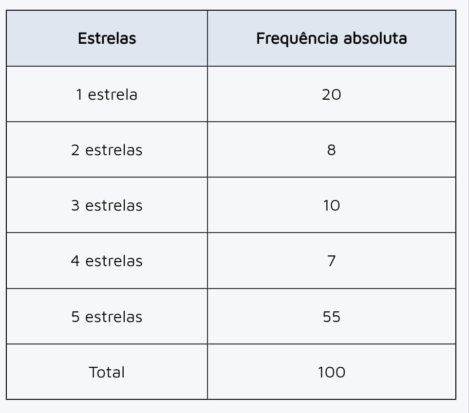

Para melhorar o uso de um determinado aplicativo, o programador fez uma análise da quantidade de estrelas que 100
usuários (escolhidos aleatoriamente) deram ao serviço:

Analisando os dados encontrados, é correto afirmar que:
A- Mais da metade dos usuários deu, no máximo, 3 estrelas para o aplicativo.
B- Menos da metade dos usuários deu 5 estrelas para o aplicativo.
C- Um quarto dos usuários deu notas entre 2 e 4 estrelas.
D- Exatamente 38 usuários deram, pelo menos, 3 estrelas